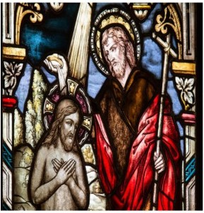

This has the ring of a true story until 3:14, where John defers to Jesus. Who is baptizing whom here? Jesus is clearly in the inferior position, so his followers had to invent another ending. John may have been an Essene, the only practitioners of ritual lustrations. John is clearly an Apocalypticist, “The axe is laid unto the root of the trees” in the dualist (Zoroastrian) style of Daniel.

Mt 3:1 In those days came John the Baptist, preaching in the wilderness of Judaea, 3:2 And saying, Repent ye: for the kingdom of heaven is at hand. 3:3 For this is he that was spoken of by the prophet Esaias, saying, The voice of one crying in the wilderness, Prepare ye the way of the Lord, make his paths straight. 3:4 And the same John had his raiment of camel's hair, and a leathern girdle about his loins; and his meat was locusts and wild honey. 3:5 Then went out to him Jerusalem, and all Judaea, and all the region round about Jordan, 3:6 And were baptized of him in Jordan, confessing their sins. 3:7 But when he saw many of the Pharisees and Sadducees come to his baptism, he said unto them, O generation of vipers, who hath warned you to flee from the wrath to come?
3:8 Bring forth therefore fruits meet for repentance: 3:9 And think not to say within yourselves, We have Abraham to our father: for I say unto you, that God is able of these stones to raise up children unto Abraham. 3:10 And now also the axe is laid unto the root of the trees: therefore every tree which bringeth not forth good fruit is hewn down, and cast into the fire. 3:11 I indeed baptize you with water unto repentance. but he that cometh after me is mightier than I, whose shoes I am not worthy to bear: he shall baptize you with the Holy Ghost, and with fire: 3:12 Whose fan is in his hand, and he will thoroughly purge his floor, and gather his wheat into the garner; but he will burn up the chaff with unquenchable fire. 3:13 Then cometh Jesus from Galilee to Jordan unto John, to be baptized of him. 3:14 But John forbad him, saying, I have need to be baptized of thee, and comest thou to me? 3:15 And Jesus answering said unto him, Suffer it to be so now: for thus it becometh us to fulfil all righteousness. Then he suffered him. 3:16 And Jesus, when he was baptized, went up straightway out of the water: and, lo, the heavens were opened unto him, and he saw the Spirit of God descending like a dove, and lighting upon him: 3:17 And lo a voice from heaven, saying, This is my beloved Son, in whom I am well pleased.
~~~~~~~